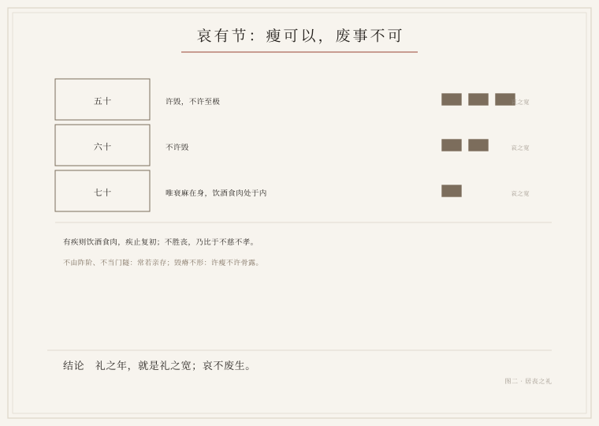

曲礼上 · 一·一百零一 · 第 99 课
居丧可以瘦，不可瘦到露骨；视听不衰；上下不走阼阶，出入不走门隧；有创则沐，有疡则浴，有病则饮酒食肉，病愈复初；不胜丧则比于不慈不孝；五十不致毁，六十不毁，七十唯衰麻在身。
说什么事：居丧之礼，毁瘠不形，视听不衰，升降不由阼阶，出入不当门隧；头有创则沐，身有疡则浴，有疾则饮酒食肉，疾止复初；不胜丧，乃比于不慈不孝；五十不致毁，六十不毁，七十唯衰麻在身，饮酒食肉，处于内。
落在哪一层：礼意，兼及仪与分。哀有节，视年而差。
为何编在此位：上节言斋，此节言丧。斋收心，丧收身；两节皆言「不可过」。
【经】居喪之禮，毀瘠不形，視聽不衰，升降不由阼階，出入不當門隧。居喪之禮，頭有創則沐，身有瘍則浴，有疾則飲酒食肉，疾止復初。不勝喪，乃比於不慈不孝。五十不致毀，六十不毀，七十唯衰麻在身，飲酒食肉，處於內。
【注】為其廢喪事。形謂骨見。常若親存，隧，道也。勝，任也。所以養衰老。人五十始衰也。
毁瘠 疏「毁瘠，羸瘦也」。哀毁而瘦。
不形 注「形谓骨见」。瘦可，骨露不可。
视听不衰 注「为其废丧事」。视听一衰，则不能办事。
阼阶 注「阼阶，主人之阶也」。疏「孝子事死如事生……不忍从父阼阶上下」；祔祭以后乃得升阼阶。
门隧 注「隧，道也」。疏「出入不当门隧」，谓不当门中之正道。
创、疡 创，疮也；疡，身疾。有创疡则沐浴，恐其秽积。
疾止复初 病愈则复丧服之常。
不胜丧 注「胜，任也」。疏「疾不食酒肉、创疡不沐浴，毁而灭性者也」。不留身继世，是不慈；灭性违亲，是不孝。不言「同」而言「比」，以其本心非为不孝。
五十不致毁 注「所以养衰老，人五十始衰」。致，极也，许有毁而不至极。
七十唯衰麻在身 注。衰麻在身而饮食居内，是全以养老为重。
居丧之礼，哀毁而瘦可以，不可瘦到露骨；视听不可衰退；上下不走主人之阶，出入不走门中正道。头有疮则洗头，身有疡则沐浴；有病则饮酒食肉，病愈恢复居丧之常。若因哀毁而不能任丧事，就比于不慈不孝。五十岁不许毁到极处，六十岁不许毁，七十岁只须衰麻在身，可以饮酒食肉、居于内室。
一节反复说一件事：哀要有度。瘦可以，露骨不可以；守丧可以，废事不可以；不食可以，有病不食不可以。最后按年岁递减，五十、六十、七十，一层层把人从哀里放出来。
第一层 哀许其形，不许其毁 注「为其废丧事」。丧事还要人办，人倒了，丧就办不成。
第二层 常若亲存 疏解不由阼阶、不当门隧：孝子事死如事生，仍如父在，不敢僭其位。
第三层 疾则饮酒食肉 这一条最见礼之实。守丧之节，遇疾则让位于生。
第四层 比于不慈不孝 不是骂，是「比」——本心非不孝，而其形同之。用「比」字，是留了情。
第五层 以年递减 五十始衰，许毁而不极；六十不许毁；七十只存衰麻。礼之年，就是礼之宽。
与今日何干 丧期中的人，饭要吃、病要看、事要办；老人居丧，更不该硬撑。此节今日最须重申。
| 左 | 右 |
|---|---|
| 毁瘠不形 | 许瘦，不许骨露 |
| 视听不衰 | 为不废丧事 |
| 不由阼阶／不当门隧 | 常若亲存，不敢僭位 |
| 创则沐，疡则浴 | 有创疡则洁身 |
| 疾则饮酒食肉 | 生重于节 |
| 疾止复初 | 病愈复丧服之常 |
| 五十、六十、七十 | 以年递减其毁 |
画阼阶与门隧两处：左侧阶石上无人足迹、阶面落着一层薄尘；右侧门中正道以一道细线标出，线两侧地面有绕行的脚印、正中却干净。另有一角放着药器与一碗粥。不画人、不写文字。赭色只在药器口沿。
